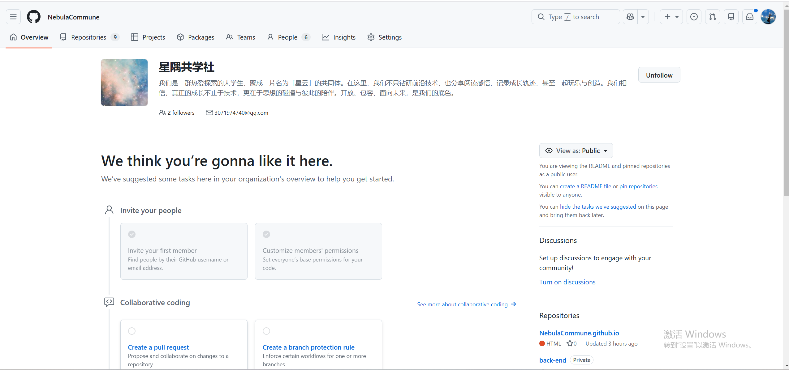
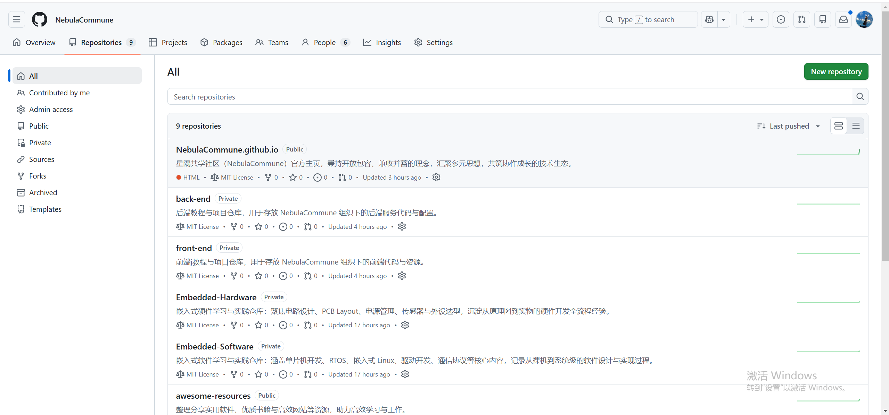
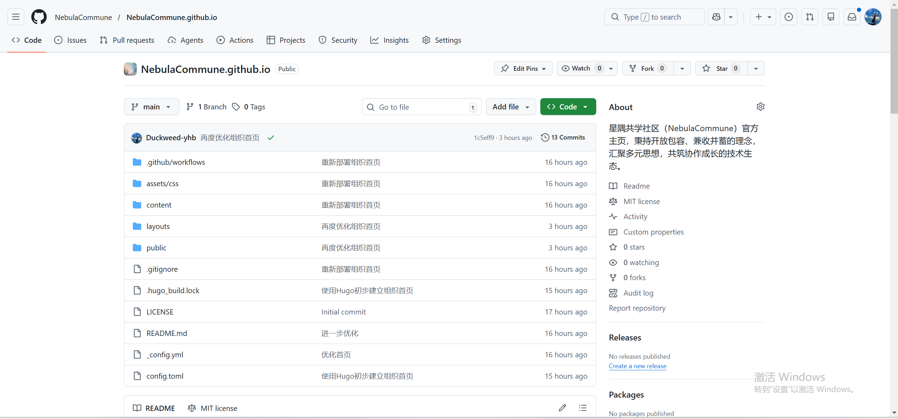
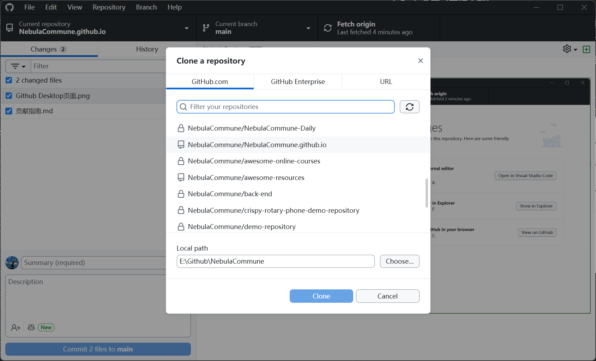

← 返回首页
NebulaCommune 贡献指南（GitHub Desktop + VS Code）
一、NebulaCommune 组织页面介绍
当你访问 NebulaCommune GitHub 组织主页 时，会看到以下核心板块：

1. 组织概览（Overview）
- 头像与名称：星云主题头像 +「星隅共学社」名称，代表我们的社区定位。
- 简介：
我们是一群热爱探索的大学生，聚成一片名为「星云」的共同体。在这里，我们不只钻研前沿技术，也分享阅读感悟、记录成长轨迹，甚至一起玩乐与创造。我们相信，真正的成长不止于技术，更在于思想的碰撞与彼此的陪伴。开放、包容、面向未来，是我们的底色。
- 联系方式：邮箱
3071974740@qq.com，可用于联系组织管理员。
2. 顶部导航栏
- Repositories（仓库）：显示组织下的所有公开/私有仓库。
- People（成员）：列出组织内的所有成员，可查看大家的 GitHub 主页。
- Teams（团队）：按项目或兴趣划分的协作小组（如「前端组」「文档组」）。
- Insights（洞察）：统计组织的贡献数据、代码提交趋势等。
- Settings（设置）：仅管理员可见，用于管理组织权限、仓库等。
二、以 NebulaCommune.github.io 为例的仓库界面介绍
先进入组织主页，然后点击Repositories（仓库），出现下边的页面之后，

点击进入 NebulaCommune.github.io 仓库（即官网项目），核心界面如下：

1. 顶部导航栏（仓库内）
- Code（代码）：当前页面，显示仓库的文件结构、提交历史等。
- Issues（问题）：用于提交 Bug 反馈、功能建议或讨论。
- Pull requests（合并请求）：查看和管理代码贡献的 PR。
- Actions（自动化）：查看自动部署、CI/CD 等工作流的运行状态。
- Settings（设置）：仅管理员可见，用于配置仓库权限、分支保护等。
2. 中央文件区
- 分支与标签：左上角显示当前分支（如
main），可切换分支或查看标签。
- 文件列表：
.github/workflows：GitHub Actions 自动化配置文件。assets/css：项目样式文件。content：Hugo 站点的 Markdown 内容（如文章、页面）。layouts：Hugo 模板文件（如首页、详情页布局）。public：Hugo 构建生成的静态站点文件。README.md：项目说明文档，包含项目介绍、使用方法等。
- 提交历史：每个文件右侧显示最近一次提交的信息（如“再度优化组织首页”）。
3. 右侧信息区
- About（关于）：项目简介：
星隅共学社区（NebulaCommune）官方主页，秉持开放包容、兼收并蓄的理念，汇聚多元思想，共筑协作成长的技术生态。
- License（许可证）：项目采用 MIT 开源协议。
- Fork / Star / Watch：可收藏项目、关注更新或 Fork 到个人账号进行贡献。
三、准备工作
1. 安装必要工具
- GitHub Desktop：图形化 Git 客户端，简化代码拉取、提交和推送操作
- VS Code：代码编辑器，用于编写和修改项目文件
- 注册并登录 GitHub 账号，确保你是 NebulaCommune 组织成员或已 Fork 目标仓库
2. 配置 GitHub Desktop
- 打开 GitHub Desktop，登录你的 GitHub 账号
- 在
File > Options > Git 中确认 Git 路径已正确配置
- 在
File > Options > Integrations 中，将“External editor”设置为 VS Code
四、GitHub Desktop 界面介绍
打开 GitHub Desktop 后，核心区域如下：
- 左侧仓库列表：显示你克隆到本地的所有仓库，点击可切换当前操作的仓库。
- 顶部分支栏：显示当前所在分支，点击下拉菜单可切换分支、创建新分支。
- 中央修改区：
- 左侧：列出本次修改的所有文件，勾选可选择要提交的文件。
- 右侧：显示选中文件的具体修改内容（diff），绿色为新增，红色为删除。
- 底部提交区：
Summary：必填，填写本次提交的核心信息（如“完善贡献指南文档”）。Description：可选，填写更详细的修改说明。Commit to [分支名]：提交按钮，将修改提交到本地仓库。
- 右上角操作区：
Fetch origin / Pull origin：拉取远程仓库的最新代码。Push origin：将本地提交推送到远程仓库。Create Pull Request：发起合并请求，将你的代码贡献到主仓库。
五、VS Code 界面介绍
打开项目文件夹后，VS Code 的核心界面如下：
- 左侧活动栏：
- 资源管理器：显示项目文件结构，可新建、删除、重命名文件。
- 源代码管理：查看 Git 状态、暂存文件、提交修改（也可直接用 GitHub Desktop 操作）。
- 扩展：安装插件增强功能（如 Markdown 预览、代码格式化工具）。
- 中央编辑区：编写和修改代码/文档的核心区域，支持多标签页切换。
- 底部状态栏：
- 显示当前分支、Git 状态（如“已修改 2 个文件”）。
- 点击可快速切换分支、拉取/推送代码。
- 终端：可打开内置终端执行 Git 命令（如
git status、git log），适合熟悉命令行的用户。
六、获取项目代码
1. Fork 仓库（首次贡献）
- 打开浏览器，访问
NebulaCommune/NebulaCommune.github.io 仓库
- 点击右上角的 Fork 按钮，将仓库 Fork 到你的个人 GitHub 账号下
2. 克隆到本地（可以跳过Fork仓库这个步骤 直接进行克隆到本地 这里以awesome-online-courses为例）
- 打开 GitHub Desktop （Github Desktop页面如下）

- 点击
File > Clone repository...
- 在弹出的窗口中，选择你 Fork 的仓库（如
your-username/NebulaCommune.github.io），这里以awesom-online-source仓库为例

- 点击
Choose可以选择本地存储路径，点击 Clone 完成克隆 （克隆完成的页面如下，可以发现左上角已经变成awesome-online-source）

七、开始贡献
1. 创建新分支（可以不创建新分支，而是直接开始编辑代码）
- 在 GitHub Desktop 顶部的当前分支下拉菜单中，点击 New branch
- 输入分支名称（建议遵循
类型/描述 格式，如 feature/add-contribution-guide 或 fix/typo-in-readme）
- 点击 Create branch，GitHub Desktop 会自动切换到新分支
2. 使用 VS Code 编辑代码
- 在 GitHub Desktop 中，点击
Repository > Open in Visual Studio Code，或直接在 VS Code 中打开项目文件夹

- 在 VS Code 中进行代码修改、文档完善或资源添加（这里我以README.md为例）
- 保存所有修改（
Ctrl+S / Cmd+S）（修改后的页面如下）

八、提交与推送
1. 查看修改
- 回到 GitHub Desktop，左侧面板会显示所有修改的文件

- 点击文件名可查看具体修改内容（diff），确认修改无误
2. 提交到本地仓库
- 在底部或者说头像右边的“Summary”输入框中，填写清晰的提交信息（如：“完善贡献指南文档，补充 GitHub Desktop 操作步骤”）
- （可选）在“Description”中填写更详细的修改说明
- 点击 Commit to [分支名]，将修改提交到本地分支，也就是点击下边的蓝色按钮
3. 推送到远程仓库

- 点击 GitHub Desktop 右上角的 Publish branch（首次推送）或 Push origin（后续推送）
- 等待推送完成，你的代码就会同步到你 Fork 的远程仓库
九、发起 Pull Request
1. 创建 PR
- 推送完成后，GitHub Desktop 会提示“Create a Pull Request”，点击该按钮
- 浏览器会自动打开 GitHub 页面，确认目标仓库为
NebulaCommune/NebulaCommune.github.io，目标分支为 main
- 检查 PR 标题和描述，确保清晰说明修改内容和目的
- 点击 Create pull request 提交 PR
2. 等待 Review
- 项目维护者会对你的 PR 进行 Review，可能会提出修改建议
- 如果需要修改，在本地对应分支上继续修改，然后重复“提交-推送”步骤，新的提交会自动添加到该 PR 中
- PR 被合并后，你可以在 GitHub Desktop 中切换回
main 分支，并拉取最新代码（Fetch origin）
十、常见问题与注意事项
- 分支同步：在开始新的贡献前，始终确保你的
main 分支是最新的，避免代码冲突
# 在 GitHub Desktop 中切换到 main 分支，点击 Fetch origin，然后 Pull origin
- 提交规范：保持每个提交只做一件事，提交信息清晰简洁，便于维护者 Review
- 大型修改：对于大型功能或重构，建议先在 Issues 中与维护者讨论，避免重复开发
- 代码规范：遵守项目的代码风格和提交规范，确保代码质量
十一、总结流程
- Fork 仓库 → 2. 克隆到本地 → 3. 创建新分支 → 4. VS Code 编辑 → 5. 提交到本地 → 6. 推送到远程 → 7. 发起 PR → 8. 等待 Review & 合并